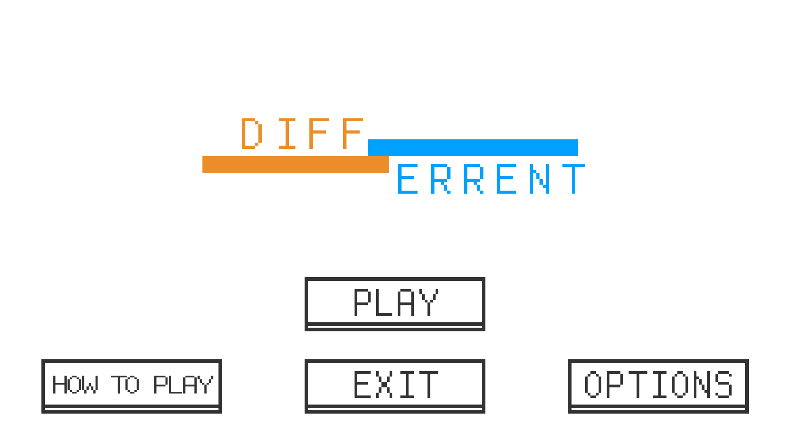

Different is a game made during a diploma wide game jam. I was one of the two programmers on the team. Our game jam theme was compised of three words: 'Abstract', 'Special', and 'Fateful'.
The goal of Different is simple. Keep the orange Belp and AT LEAST one blue Pleb alive! To keep them alive, simply avoid all obstacles. Left click to attract blue Plebs and repel the orange Belp. Right click to repel blue Plebs and attract the orange Belp. Also, by having the blue Plebs contact with the orange Belp, more blue Plebs are produced! Increase your numbers to increase your odds of surviving for as long as you can.
We gave ourselves the extra challenge of polishing the game to the point where we were happy to publish it on Game Jolt. So if you want to check out the game, you can download it here: http://gamejolt.com/games/different/142084 Or you can click the Game Jolt button at the bottom of this page.
